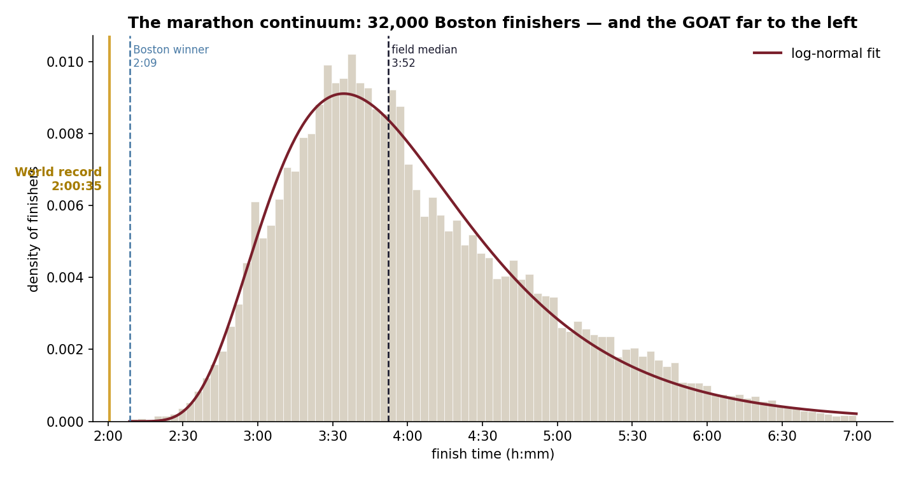
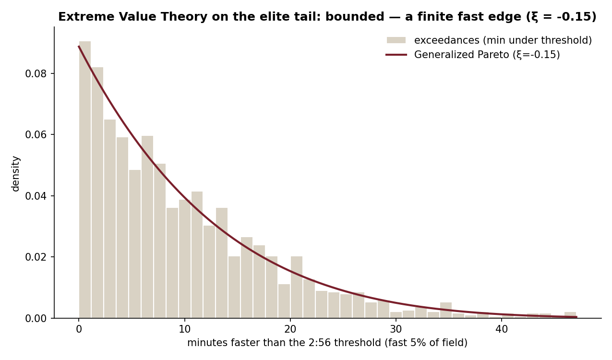
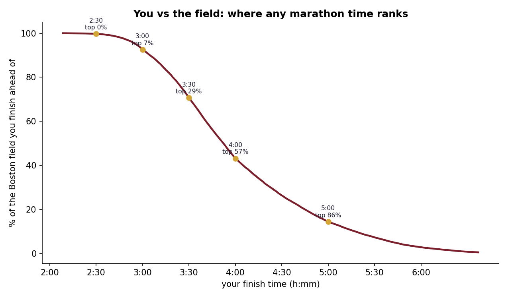

Everyone who runs a marathon lands somewhere on the same line of human endurance, from a six-hour first-timer to the fastest performance ever recorded. We rarely see the whole line. This draws it — from the 31,842 finishers of the 2014 Boston Marathon — and asks exactly where the world record falls on it.
The shape of a field — and the GOAT off its edge
A marathon field is log-normal: a rising shoulder into a peak near 3:30–3:50, then a long tail past six hours. And then there's the record. Kiptum's 2:00:35 doesn't sit in the fast end of this distribution — it sits beyond it, a gold line to the left of every finisher, faster even than the Boston winner's 2:09. Against this field it is 2.4 standard deviations below the mean, and the median runner is 93% slower. Elite marathoners aren't the right tail of the amateur curve; they're their own species off its edge.

How far can the edge go? Extreme Value Theory
To describe the fast edge you can't use the body distribution — you use Extreme Value Theory. A Generalized Pareto fit to the fastest 5% returns a shape parameter ξ ≈ −0.15. The sign is the point: below zero means the tail is bounded — it runs into a wall rather than trailing off forever. The data can see the wall's shadow, even if (honestly) it can't pin its exact location.

Where do you land?
Give it a time, get your place on the continuum. A serious 3:00 beats about 93% of this already-fast field; 4:00 lands right at the median — and each is still half a world away from the record.
| Finish time | Beats this % of the field | Slower than the WR by |
|---|---|---|
| 2:30 | 99.7% | 24% |
| 3:00 | 92.6% | 49% |
| 3:30 | 70.6% | 74% |
| 4:00 | 43.2% | 99% |
| 5:00 | 14.4% | 149% |

A note on the data: Boston is a qualifying race, so this is the distribution of already-fast, committed runners — not the general public. Every figure here describes this field. A mass-participation race would shift the whole curve slower and make the record look more extreme still. Code & method on GitHub.